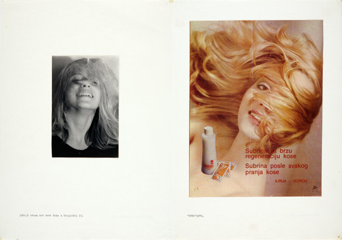
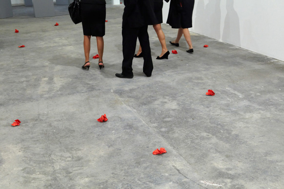

-
Women’s House: Sanja Ivekovic’s Sweet Violence
by Rachel Wetzler March 20, 2012
Is it more surprising that Croatian artist Sanja Iveković has never had a major exhibition of her work in the United States until now, or that this overdue retrospective is taking place at MoMA? Iveković’s work is overtly political, incisively tackling issues of women’s rights, life under dictatorship, East-West relations, and the political struggles in the countries of the former Yugoslavian federation, both during and after Communism. Moreover, it defies easy categorization in terms of medium and style: though the exhibition, Sweet Violence, is presented under the aegis of MoMA’s Department of Photography, the work on display ranges from photo-based conceptual projects to collage, drawings, performance, video, and installation. Iveković has exhibited widely in Europe, and is considered a crucial figure in post-war Eastern and Central European art, yet she is little-known in the United States, an art historical blind-spot this retrospective aims to correct.
In the exhibition catalogue — which, curiously, contains an essay by noted Marxist literary theorist Terry Eagleton — the show’s curator Roxana Marcoci charts the history of Yugoslavian art from 1945 to the near-present, contextualizing Iveković’s practice in terms of both the historical and political circumstances under which she worked and her artistic predecessors, but also her significant influence on a younger generation of artists from former Yugoslavian countries. As Marcoci points out, Iveković was among the only women involved with the “New Art Practice,” a loose network of Yugoslavian artists in the late-1960s and 1970s who rejected the style of officially sanctioned art in favor of alternative modes of production and distribution; moreover, Iveković is often credited as the first Yugoslavian artist to explicitly identify herself as a feminist, what she describes as “a gesture of disobedience toward the communist regime that treated feminism as a bourgeois import from the West.” Comprising four decades of her work, Sweet Violence reflects Iveković’s ongoing commitment to an activist practice, one that challenges authority and questions the ways in which dominant narratives are formed and disseminated.
For Trokut (Triangle) (1979), represented here by photographic documentation, Iveković directly intervened into the systems of repression, surveillance, and control governing Yugoslavian society, a gesture of resistance that acutely merges the personal and the political. During a visit by Yugoslav president Marshal Josep Broz Tito, Iveković stepped out onto the balcony of her Zagreb apartment, which overlooked the presidential motorcade’s route through the city, with a glass of whiskey and a stack of foreign books — including the British Marxist sociologist Tom Bottomore’s 1964 study Elites and Society — and mimed masturbation, knowing that she was being watched by members of the secret police on the roof of the opposite building. After eighteen minutes, a policeman came to the door and ordered her off the balcony, completing the performance. Trokut not only illustrates — and comically challenges — the culture of control under which Yugoslav citizens were living during Tito’s reign, but also inverts it, making the members of the secret police complicit in her work: they play directly into her expectations, unwittingly performing the role she has assigned them.
Likewise, the exhibition’s titular work, Sweet Violence (1974), addresses state propaganda in Tito’s Yugoslavia through the appropriation of broadcasts on state television. Placing black bars on her television monitor, Iveković taped a daily broadcast of a propagandistic program on Zagreb’s economy, a gesture that both obscures the image, functioning as a kind of Brechtian distancing effect that refuses the viewer the possibility of being “seduced” by the media’s message, and also metaphorically reflects life under the regime, the vertical strips recalling those of a prison cell. Indeed, it is this interest in the media that forms one of the most consistent strands throughout her entire oeuvre: the majority of works in Sweet Violence make use of appropriated and altered mass-media imagery, detourning these images to highlight the ways the media is used as a tool by those in power. As Iveković noted in a 2009 interview, “The media’s role in shaping dominant cultural representations should never be underestimated…I appropriate media images because my intention is to subvert the assumptions implied in the discourse of mass media using its own language.”
In addition to government propaganda, much of her work employs imagery drawn from or based on fashion magazines and advertisements, specifically considering the media’s role in the subjugation and manipulation of women. This is perhaps most clear in the series Women’s House (Sunglasses) (2002–09), lining the entrance to the exhibition, for which Iveković superimposed first-person accounts from women living in domestic violence shelters over advertisements for designer sunglasses, creating a stark contrast between the glossy imagery of fashion photography, which aims to seduce women into purchasing luxury goods, and the brutality of the narratives of abuse. Referencing the dark glasses often worn by abused women to hide their bruises, the models in these advertisements become stand-ins for the battered women, a reminder of not only the societal pressures faced by women, but also the complex entanglement between consumerism and exploitation.
Similarly, in the earlier series Double Life (1975–76), Iveković juxtaposed advertisements for products targeted towards women, such as cosmetics and cookware, from various international women’s magazines, with photographs of herself taken between 1953 and 1976. Though Iveković and the model appear in nearly identical poses in each pair, the majority of the snapshots of the artist were in fact taken prior to the publication of its pendant image, suggesting that these media-circulated tropes of femininity are so deeply ingrained that women embody them unconsciously. Presenting dozens of these images — advertisements from different countries and years, each hawking different products — together, Iveković highlights the uniformity of female media roles, and the unsettling ways that they are internalized and replicated.
While her earlier work from the 1970s and early 1980s often responds directly to life under dictatorship and the hypocrisies of state socialism — as Marcoci notes in the catalogue, the official egalitarian rhetoric of Communism, which purportedly made feminism obsolete, clashed with the reality of life as a woman in what Iveković refers to as a patriarchal culture — more recent projects, created after the fall of Communism and the break-up of Yugoslavia, often address questions of cultural memory and the ongoing struggles of women worldwide to achieve equality under democracy.
The project Pregnant Memory, intended for the 1998 Manifesta biennial in Luxembourg, was a proposal — ultimately rejected — to alter Luxembourg’s famous World War I and II memorial, “Gelle Fra” (Golden Woman), an obelisk in the center of Luxembourg’s capital topped with a gilded neoclassical statue of Nike, by removing the statue from the memorial and placing it at a women’s shelter for the duration of the exhibition. Commissioned, in 2001, to create a work for another exhibition in Luxembourg, organized by the Casino Luxembourg and the Musée d’Histoire de la Ville de Luxembourg, Iveković presented a new version of her Manifesta proposal, Lady Rosa of Luxembourg, an altered replica of the Gelle Fra placed near the original monument, replacing the its allegorical image of victory with a gilded pregnant figure and dedicating it to the radical German Marxist Rosa Luxemburg. In creating a new version of the memorial, Iveković points to what is concealed by the original: though women were actively involved in Luxembourg’s resistance movement during World War II, their contributions are rarely, if ever acknowledged; instead, the place of women within official commemorations are as allegorical representations.
The project was the subject of enormous controversy, receiving international attention and provoking heated comment from supporters and detractors alike worldwide. Presented in MoMA’s atrium, the towering statue is surrounded by an installation documenting the work’s reception, including vitrines full of newspaper clippings and magazine articles from across the globe, as well as monitors with recordings of television broadcasts discussing the piece. Iveković appropriates the outrage, incorporating it into her work as a comment on the public’s discomfort with a woman who dares to challenge symbols of heroism and national pride, as well as a reflection of her career-long interest in the power of the media to shape and manipulate public opinion.
Further, she has considered the media’s complicity in the erasure of history, particularly focusing on the legacy of Communism in the former Soviet bloc. Much as Lady Rosa of Luxembourg addresses the establishment of a national narrative of heroism that ignores women’s involvement, works such as the series Gen XX (1997–2001), Rohrbach Living Memorial (2005), and The Right One. Pearls of Revolution (2010) all highlight the aspects of the region’s history that have been suppressed, countering what she sees as Croatia’s cultural amnesia; in its eager embrace of neo-liberalism after achieving independence from Yugoslavia, the nation was quick to abandon the remnants of its socialist past.
For Gen XX, Iveković altered images of fashion ads featuring well-known supermodels, replacing the ad’s corporate logo with information about forgotten socialist heroines, women who had been imprisoned, tortured, or executed for their resistance to Croatia’s Nazi-controlled fascist government in the 1940s — including the artist’s mother, Nera Šafarič, a fighter in the People’s Liberation War who was arrested and sent to Auschwitz in 1942. Lamenting the fact that these women’s stories have disappeared from national consciousness in the post-communist period, Iveković’s juxtaposition of the ubiquitous faces of the models with the now-obscure names of the female militants is a damning commentary on the ease with which Croatia has forgotten the women who helped to shape its history — and the fashion industry’s constant emphasis on the new. Iveković distributed the work as mock advertisements in the Croatian alternative magazine Arkzin — no mainstream publications would print them — inserting them directly into the system she critiques.
Indeed, one of the difficulties in staging a museum exhibition of Iveković’s work is that much of it has taken place outside of an institutional setting: in addition to public art projects like Lady Rosa of Luxembourg, she has often presented her work in the form of billboards, posters, public television broadcasts, and publications, reflecting her interest in maintaining an artistic practice that directly intervenes into the surrounding world, in which the aesthetic operates in tandem with the political. In her approach to curating this exhibition, Marcoci seems to have acknowledged the limitations of the museum, supplementing Iveković’s work with contextualizing labels and, in some cases, showing projects in multiple formats: Gen XX is displayed both as large-format wall-mounted prints and in vitrines containing issues of Arkzin, showing the project as it originally appeared.
Turkish Report (2009) at the 11th Istanbul Biennial. Collection the artist. Courtesy Amnesty International USA.
Moreover, the exhibition aims to activate viewers through disrupting certain conventions of museum behavior. Strewn throughout MoMA’s photography galleries are crumpled balls of red paper, their haphazard placement and crude handling in marked contrast to the pristine rooms and deliberate installations seen throughout the rest of the building. Visitors seemed unsure of what to do with this apparent detritus: most treated it with a kind of bewildered reverence, traversing the galleries carefully as to avoid hitting the discarded sheets, occasionally stopping for a moment to glance at one contemplatively, while others gave them a dismissive kick, taking a certain satisfaction from the fact that no one attempted to intervene.
After receiving an approving nod from a museum guard, I picked one up and opened it, revealing a printout of the Convention on the Elimination of All Forms of Discrimination Against Women (CEDAW), an agreement adopted by the United Nations in 1979 that has been ratified by virtually all its members, but — as a wall label in the exhibition’s final room points out — not the United States (fellow dissenting countries include Iran and the Sudan.) The installation, titled Report on CEDAW U.S.A. (2011), is, in a sense, the exhibition’s most subtle work, apt to be overlooked by most visitors, but also its boldest statement, transforming what has been called a “bill of rights” for women into literal garbage. As Iveković states, “The position of an artist differs from that of an activist, but rather than separating the two activities, we can see them as circles of human activity that overlap in a relatively small area, and that is the area in which I try to do most of my work.”
Sanja Iveković’s “Sweet Violence” is on view through March 26 at the Museum of Modern Art, 11 West 53rd Street New York, NY 10019.